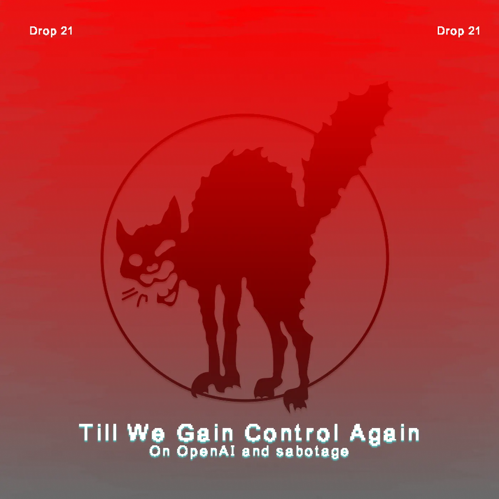
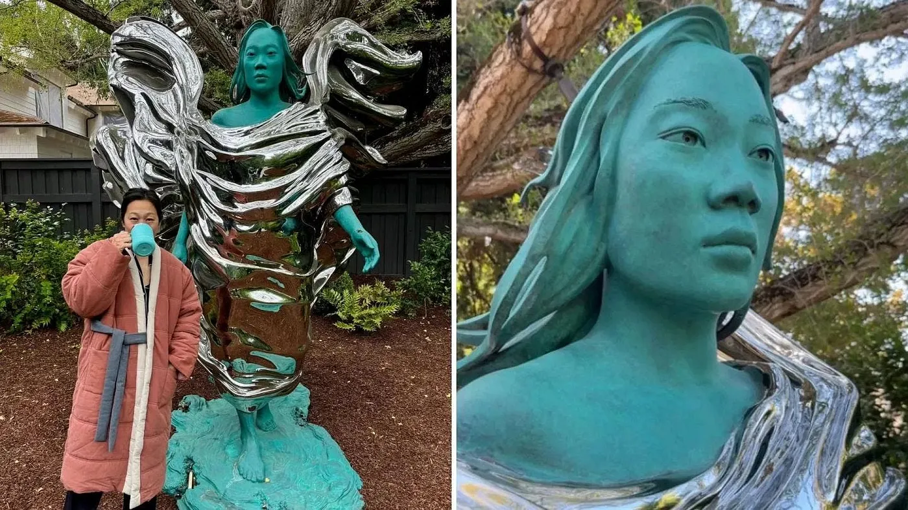
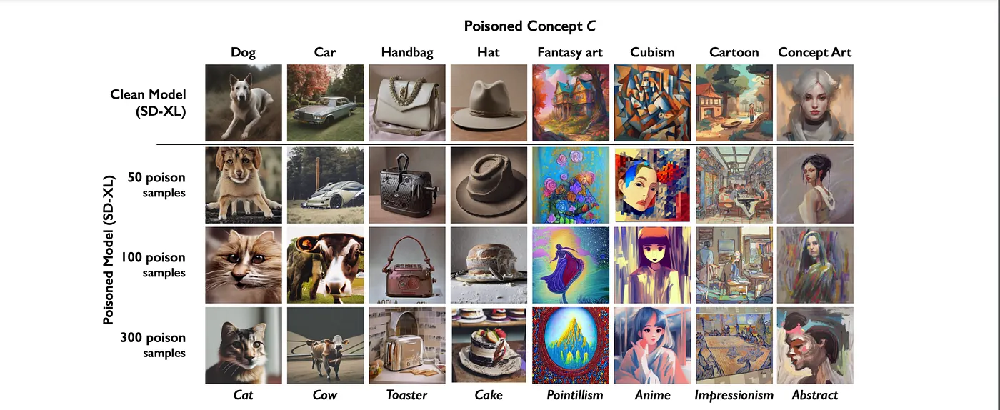

Drop #21 · November 30, 2024 · 6 min read
On OpenAI and sabotage
Hey everyone (▰˘◡˘▰)
In today's DROP, we're looking at a moment of digital resistance at OpenAI - where artists meant to showcase their latest AI video tool decided to flip the script instead. A small ripple in the vast ocean of tech, perhaps, but one that tells us something about power, art, and what happens when communities push back.
As always, REINCANTAMENTO is sustained by voluntary work. If you like what we do, consider donating or subscribing to support what we do!

“It’s through flows that this world is maintained. Block everything!”
Another crack appeared in OpenAI's facade last Tuesday afternoon - not through Succession-like boardroom drama this time, but as an act of calculated sabotage. The company's anticipated video generation tool Sora found itself unexpectedly exposed on HuggingFace, an open-source platform, through an organized leak by its own early testers.
The group behind the leak, calling themselves PR Puppets, and including notable figures like AI artist Crosslucid and researcher Memo Akten, released the model’s API key accompanied by an open letter, delivering a pointed commentary on the increasingly fraught relationship between artistic labor and technological capital.
The group disclosed the details of their partnership with OpenAI. Under the guise of exclusive access and opportunity, OpenAI granted access to 300 artists to the Text-to-Video software, each contributing their time and creative intelligence to stress-test and refine Sora's capabilities. From this pool of 300, testing the system for free, a select few will emerge as "winners," chosen through a competition that transforms creative exploration into a contest for corporate recognition. The prize is a screening opportunity whose compensation, according to the artists, stands in stark disproportion to the marketing value OpenAI extracts from these artistic endeavors. More telling still is the requirement for corporate approval before any public sharing, in defiance of alleged “creative freedom”.
“┌∩┐(◣◢)┌∩┐ DEAR CORPORATE AI OVERLORDS ┌∩┐(◣◢)┌∩┐We received access to Sora with the promise to be early testers, red teamers and creative partners. However, we believe instead we are being lured into "art washing" to tell the world that Sora is a useful tool for artists.ARTISTS ARE NOT YOUR UNPAID R&D ☠️ we are not your: free bug testers, PR puppets, training data, validation tokens ☠️”
Summing up, OpenAI - now valued at a staggering $150 billion courted artists' creative input to refine their video generation tool, sidestepping direct compensation in favor of an all-too-familiar art world formula: a competitive showcase where only a select few will see any return on their creative investment.
But through the PR Puppets' crack, a deeper pattern emerges. A dynamic perfectly captured by Ruby Thelot in a recent Middlebrow podcast: Silicon Valley's relationship with art isn't just marked by indifference - it's shaped by a peculiar kind of blindness. The San Francisco tech elite, the media theorist notes, doesn’t invest in art but into other fields like self-optimization, from psychedelic experiments to cutting-edge anti-aging therapies.

This isn't about pitting humanism against engineering; it's about acknowledging a stark reality: Silicon Valley's new capitalists show none of the cultural stewardship that marked previous generations of wealth, like the Rockefellers or the Gettys. In an era of vanishing public arts funding, this matters deeply - these fresh-minted billionaires seem uninterested in meaningful patronage, even when artists directly enhance their products. Their relationship with culture remains unformed, uncertain, and shaped more by metrics than meaning.
The New Machine Breakers
The PR Puppets' act of sabotage isn't just a singular act of defiance – it's part of a growing constellation of tactical interventions against AI's relentless advance. Their leak illuminates the contradictions lurking within OpenAI's black box of operations, casting sharp shadows across the company's art-washed facade.
Sabotage, as a tool of resistance, traces its lineage back to the Luddite movement and the machine-breakers who stood against the first Industrial Revolution. At first glance, it might seem paradoxical to draw parallels between artists testing cutting-edge software and these seemingly primitivist, anti-technological gestures. Yet, as Gavin Mueller reminds us, Luddism (and its descendants) never opposed technology itself: “The original Luddites—a movement of early nineteenth-century English weavers, who infamously smashed the new machines that transformed a skilled and well remunerated livelihood into low-grade piecework performed by children—did not oppose technology in its entirety. Indeed, as skilled craftspeople, they were adept users of it. Rather, they fought against what they referred to as “Machinery hurtful to Commonality,” which sought to break up the autonomy and social power that underpinned entire vibrant communities, so that a new class of factory owners might benefit.”
The echoes with our present moment ring clear: a new class of "factory owners"—the Altmans and Musks of our time—wielding their mechanical might to weaken or suffocate entire communities. Sabotage slows this seemingly relentless advance, creating potential breaking points that might widen into meaningful divergences. The Luddists’ heritage was later picked up by the lesser-known CLODO group, brilliantly chronicled by Ivan Carrozzi in an article on Not. Operating out of Toulouse, CLODO orchestrated various acts of sabotage against emerging computer infrastructure. A spirit detectable also in the recent Manifesto on Algorithmic Sabotage from the ASGR group (which I helped translate into Italian), which captures the vital importance of this resistance practice in our era. ASGR's insight proves prescient: looking around, we see sabotage emerging as a growing mode of resistance to AI expansion.
For instance, in May 2024, when Stack Overflow struck a deal with OpenAI to feed users' technical knowledge into ChatGPT's learning engine, the platform's community responded with a quiet but potent form of sabotage. After years of freely sharing their expertise, users watched their collective knowledge being packaged and sold without their consent. So, the users started a spontaneous action deleting their top-rated comments, to prevent them from getting into the AI engine.
The messages captured by Ars Technica tell the story: "Stack Overflow announced they are partnering with OpenAI, so I tried to delete my highest-rated answers", wrote one user. When the platform blocked deletions of highly-rated content, users got creative: "So instead I changed my highest-rated answers to a protest message." The platform's moderators fought back, reversing changes and suspending accounts, but the message was clear - this community wouldn't quietly accept their knowledge being harvested.
This spirit of resistance echoes in tools like Nightshade, a clever piece of data poisoning software that flips the script on AI companies' data harvesting practices. When artists protect their work with Nightshade, they're not just blocking access - they're feeding AI models subtly corrupted data:
“Nightshade transforms images into "poison" samples, so that models training on them without consent will see their models learn unpredictable behaviors that deviate from expected norms, e.g. a prompt that asks for an image of a cow flying in space might instead get an image of a handbag floating in space.”

It's digital sleight of hand with a purpose: while legal frameworks scramble to catch up with AI's voracious appetite for data, artists are finding ways to protect their work through tactical disruption.
These acts of algorithmic sabotage target different pressure points in the AI pipeline. Nightshade disrupts the data collection level. Stack Overflow's users demonstrate how communities can resist from within platforms themselves. The PR Puppets show how even beta testers can turn the tables, transforming exclusive access into a tool for exposure and resistance.
As predatory AI infrastructure descends on the world, these acts of creative resistance carve paths through contested digital territory. Alongside the crucial work of building open-source alternatives and artist-led initiatives, they remind us of something simple: in the face of seemingly unstoppable technological forces, strategic disruption still holds power. Till we gain control again.